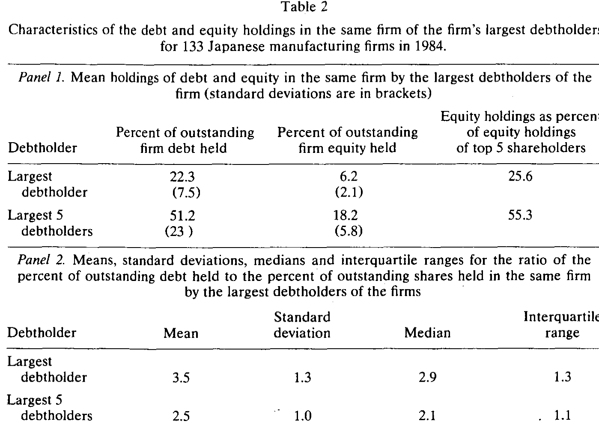
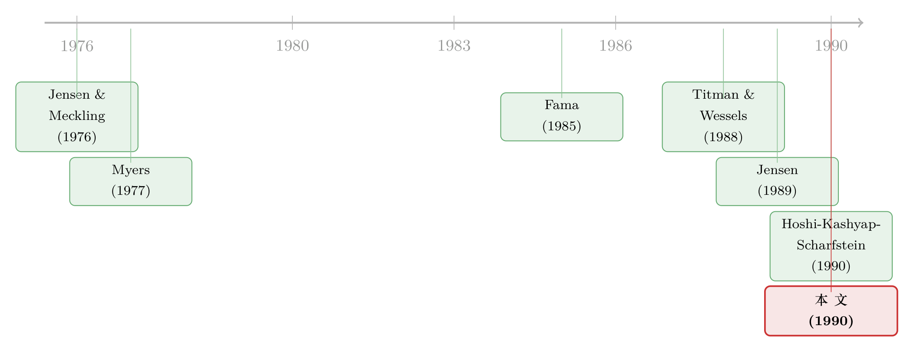

同一道难题，两套金融系统：日本的银行为什么既当债主又当股东
本文读的是 Prowse (1990, Journal of Financial Economics)：在美国，金融机构被法律挡在「既持债、又持股」的门外；在日本却没有这道墙。Prowse 发现日本金融机构恰恰在「最容易被股东掏空」的公司里同时握着债与股——最大五个债权人持有约 51.2% 的债与 18.2% 的股，而且这种「债股齐持」在高代理成本公司里相关性骤升到 0.83（p=0.01）；与此呼应，美国公司的杠杆与「股东侵占债主的空间」显著负相关，日本公司却看不到这层关系。一句话：股东与债主之间那个古老的冲突，在日本被制度悄悄抹平了一截。
1 引言：一堵墙，两种命运
先抛一个看似与金融无关、却足以改变一家公司全部财务行为的问题：借钱给你的人，能不能同时是你的股东？
在美国，答案几乎是「不能」。1933 年的《格拉斯-斯蒂格尔法》(Glass-Steagall Act) 把商业银行的自营账户彻底挡在了公司股票之外；保险公司受各州的数量与质量限制；养老基金头上还压着 1974 年《雇员退休收入保障法》(ERISA) 的「谨慎人」规则 (prudent man rule)。于是在美国，给公司放贷的人和持有公司股票的人，几乎是两拨互不相干的人。
在日本，答案却是「当然能」。1980 年代初，日本的城市银行、信托银行、长期信用银行可以名正言顺地一手持债、一手持股；保险公司亦然。于是同一家金融机构，可以既是你最大的债主，又是你最大的股东。
这堵墙在不在，看似只是监管条文的差别。但 Prowse 想说的是：这堵墙的有无，恰恰决定了一家公司里那个最古老的冲突——股东与债主之争——能被压到多低。 这就是全文反复打磨的那一个核心。
2 那个古老的冲突：股东想从债主兜里掏钱
要理解 Prowse 在做什么，得先回到 Jensen and Meckling (1976) 和 Myers (1977) 立下的那块基石：股东与债主之间的代理问题 (agency problem)。
故事是这样的。债主拿的是固定索取权 (fixed claim)，股东拿的是剩余索取权 (residual claim)。一旦公司借了钱，股东就有了一种坏念头：去做那些「风险高、却对公司整体不利」的投资。为什么？因为这类投资若赌赢了，超额收益全归股东；若赌输了，下行风险有相当一部分由债主承担。这就是经典的 资产替代 (asset substitution) 与 投资不足 (underinvestment)。
理性的债主当然不傻。他们预见到股东有这个动机，于是在放贷时就要求更高的利息——公司越是「有空间」去搞这种损人利己的投资，债主要的补偿就越高，公司的最优杠杆 (leverage) 也就被压得越低。
那么，有没有办法让债主不必如此提防？ Prowse 的洞见在这里：如果债主本身就是大股东呢？
关键不在于「对冲」，而在于「控制」。一个投资者只要在公司里持有等比例的债和股，就能对冲掉「财富转移」那一块损失——你从左口袋（债）流向右口袋（股）的钱，左右相抵。但这并不能解决代理问题：风险投资本身的「价值毁损」那一块，等比例持有也对冲不掉。真正能解决问题的，是债主凭借手里的股权和投票权，直接把这类投资拦在门外。
于是逻辑闭环了：当一个金融机构既是大债主、又是大股东，它就既有动机（怕自己的债贬值）、又有能力（手握投票权）去阻止公司搞那些损害债权价值的勾当。Rational 的市场看到这一点，就不会对公司的债要求那么高的折价，股东侵占空间与杠杆之间那条负相关线，也就被抹平了。（关于债务这味「逼老板」的药为什么不能一吃了之，可参见《债务这副药，为什么不能全吃？——重读 Jensen 和 Meckling 五十年》；关于「让别人替你盯着借款人」如何压低利率，可参见《银行凭什么少收你利息？因为有别人替它盯着你》。）
3 一道制度的鸿沟
接着，一个自然的问题是：这套机制在两国的「可用程度」差多少？
Prowse 先用一张总量表把鸿沟摆出来。1984 年，日本的商业银行（城市、信托、长期信用、地方银行合计）持有全部公司股票的 20% 以上；而美国的商业银行，因法律所限，自营账户里持有的公司股票是 0.0%。日本的寿险与财险公司合计持股超过 17%，是美国同行（约 5.2%）的三倍多。美国唯一持股可观的机构是养老基金（14.5%）。再看债：日本银行持有约 65% 的公司贷款与债券，寿险约 25%；美国商业银行约 45%，寿险与养老基金各自略低于 20%。
但真正关键的一步在于：在日本，最大的两类债主（银行与寿险）恰恰也是最大的两类股东。 债与股，握在同一双手里。
为什么美国长不出一个对标日本主银行的「积极投资者」？Prowse 把法律的篱笆一根根数了出来：除了 Glass-Steagall，还有寿险公司的州/联邦双重管制、养老基金的「谨慎人」规则，以及一个在法学文献里被反复提及、却常被金融学忽略的 衡平居次原则 (equitable subordination)——一旦债主通过控股而实际控制了债务人，它对公司可能负有信义义务，破产时其债权甚至可能被「居次」清偿，乃至承担法定责任 [见 Douglas-Hamilton (1975)、Bartlett and Lapatin (1977)]。这条原则解释了一件深层的事：为什么美国的股东，从来没想过用「给债券附投票权」「让大债主进董事会」的方式来主动缓解这个代理问题——因为债主自己怕惹祸上身。
还有一层 Fama (1985) 与 James (1987) 提出的可能性：商业银行因为深度介入企业日常经营，获取内部信息的成本天然更低。若果真如此，那么「允许银行持股」这件事，在日本释放出的监督潜力，会比在美国允许任意一类机构持股都更大。换言之，两国的差距可能不止于「准不准」，还在于「谁最适合干这活」。
4 日本人真的「债股齐持」吗？
制度上有空间，是一回事；他们是否真的这么做了，是另一回事。于是 Prowse 转向第一个实证问题，用 133 家日本制造业公司（1984 年、均为 系列 (keiretsu) 成员，数据取自 Industrial Groupings in Japan 与 NEEDS 数据库）来回答。
第一个事实就很扎眼：在这 133 家公司里，最大的债权人同时就是最大的股东，有 57 例；再加上「最大债主与最大股东同属一个系列」的 67 例，几乎覆盖了全样本。
具体多大呢？如表 2 所示，最大债权人平均持有该公司 22.3% 的债，同时持有 6.2% 的股——这 6.2% 已相当于「前五大股东合计持股」的 25.6%。最大的五个债权人合计持债 51.2%、持股 18.2%（占前五大股东持股的 55.3%）。这样的股权，足以对公司政策施加实质影响。

Table 2
但 Prowse 在这里做了一个诚实而克制的观察：他们并没有持有等比例的债与股。表 2 的 Panel 2 给出「持债百分比 / 持股百分比」之比，最大债权人这个比值均值 3.5、中位数 2.9；最大五债权人均值 2.5、中位数 2.1。也就是说，他们的仓位严重偏向债。单看这个比例，他们似乎并没有「对冲」好财富转移的风险——可正如前面强调的，对冲从来不是重点，用股权换来的控制权去阻止坏投资才是。
然后，真正关键的检验来了。Prowse 问：如果「债股齐持」真是为了压制代理问题，那么这种齐持应该在最容易出问题的公司里最明显。他用三个会计指标来度量「股东侵占债主的空间」：
$$AD1 = \frac{\text{R\&D expenditure}}{\text{total sales}}$$
$$AD2 = 1 - \frac{\text{gross fixed assets}}{\text{total assets}}$$
$$AD3 = \frac{\text{cash and marketable securities}}{\text{total assets}}$$
直觉是这样的：AD1（研发强度）越高，公司的「自由裁量空间」越大——债主很难分辨它是在做一个稳妥的小项目，还是在赌一个九死一生的大项目，抑或在「投资不足」[Myers (1977)]；AD2（非固定资产占比）越高，意味着越少的资产被「锁」在难以挪用的厂房设备里，股东腾挪的空间越大；AD3（现金及有价证券占比）则直接度量资产被股东轻易操纵的难易。三者越高，代理问题越严重。这三个指标，正是 Titman and Wessels (1988)、Smith and Watts (1986)、Long and Malitz (1985) 用过的那套。
于是反转出现了。Prowse 计算最大债权人（及最大五债权人）的持债比例与持股比例之间的相关系数，并按高/低代理成本分组：
- 在全样本里，这个相关性其实很弱：最大债权人
ρ=0.15（p=0.12）、最大五债权人ρ=0.12（p=0.11），都不显著； - 但当用三个指标同时筛出「最高代理成本」的那一组公司（三项都在中位数之上，
N=40）时，相关系数骤然跳到最大债权人ρ=0.66（p=0.05）、最大五债权人ρ=0.83（p=0.01）。
这正是 Prowse 想要的图景：日本金融机构并非无差别地「债股齐持」，而是专挑那些代理问题最严重的公司去同时握债握股。这种「对症下药」的投资模式，恰恰是缓解代理成本所需要的。（关于日本主银行如何凭借这种地位把企业管理层「当人质」，可参见《把老板当成人质：日本财团里那台「会换挡」的治理机器》；关于股价一跌银行就往董事会塞人的监督机制，可参见《股价一跌，银行家就坐进了董事会》。）
一个有意思的对照来自 Clyde (1989)：他用 Vickers 的数据查了 60 家《财富》500 强公司，发现美国那些持有大量股权的机构投资者，几乎从不同时持有这家公司的债——即便有，债的持有量也微乎其微。墙的两边，行为模式截然不同。
5 反转之上的反转：消失的「负相关」
到这里，Prowse 已经证明了「投资模式」的差异。但他还要追问一个更狠的问题：这种差异，是否真的改写了两国公司的财务行为？
逻辑是这样推的。如果美国的股东-债主代理问题没有被缓解，那么美国公司就应该表现出 Titman and Wessels (1988)、Kim and Sorensen (1986)、Smith and Watts (1986)、Long and Malitz (1985) 反复发现的那条规律：杠杆与「股东侵占空间」（即 AD1、AD2、AD3）显著负相关——侵占空间越大，债主越警惕，公司越借不到便宜的债，杠杆越低。
反过来，如果日本的代理问题真被那套「债股齐持」机制压平了，那么日本公司就不该出现这条负相关线。
这正是论文最漂亮的对称检验。Prowse 对两国公司分别把债务比率回归到 AD1、AD2、AD3 上：美国样本里，那条熟悉的负相关如约出现；日本样本里，这层关系消失了。一句话——美国公司的杠杆会因「代理隐患」而退缩，日本公司不会。 那道在美国清晰可见的负相关，在日本被制度抹平了。
这就是全文的落点：股东与债主之间的代理问题，并非一个纯粹的经济学常数，而是被一国的金融制度（谁能持什么）所调节。允许银行既当债主又当股东，等于给这个古老冲突装上了一个减压阀。
6 文献脉络
这条研究的源头，是 Jensen and Meckling (1976) 把「代理成本」正式写进公司金融，与 Myers (1977) 揭示的投资不足问题——它们共同定义了「股东能从债主兜里掏多少钱」这个母题。

接着，一整批实证文献把这个母题变成了可检验的命题：Long and Malitz (1985)、Smith and Watts (1986)、Kim and Sorensen (1986)，直到 Titman and Wessels (1988) 用 AD 类指标系统地验证了「代理隐患压低杠杆」。与此并行的，是 Fama (1985)、James (1987) 关于「银行贷款为何独特」的论述——它们暗示银行在监督上有信息优势。
然后，日本这条支线浮现：Nakatani (1984) 界定了系列 (keiretsu) 的经济角色，Hoshi, Kashyap and Scharfstein (1990a, 1990b) 则用日本面板数据证明，与主银行关系紧密的公司投资受流动性约束更小。Jensen (1989) 的「公众公司的衰落」与 Roe (1990) 关于美国法律如何束缚机构持股的论述，给两国对照提供了制度背景。Prowse (1990) 恰好站在这两条线的交汇处：他把「代理成本的实证度量」搬到「日本制度允许债股齐持」这个天然对照上，做出了一个跨国的识别。
评论与延伸（Q&A + 研究方向）
(a) 几个可能的疑问
Q：这篇文章是因果识别，还是相关性描述？
坦率说，更接近后者。它没有外生冲击、没有断点、也没有工具变量，靠的是「美国 vs 日本」这个制度对照加上横截面相关。所谓「识别」，是说两国监管差异是外生于单个公司的——但两国在文化、税制、会计准则上千差万别，「债股齐持→代理问题缓解」只是与证据一致的一种解释，而非被排他性证明的唯一解释。
Q：相关系数 0.66、0.83 是不是被小样本和多重分组「挑」出来的？
这是最该警惕的地方。最高代理成本组只有
N=40，而 AD1/AD2/AD3 三种切法加上「四种方法」的组合，本质上做了多次分组检验，存在 数据窥探 (data snooping) 的隐患。好在三个单维度高代理组（ρ≈0.21、0.27、0.15，p 在 0.08–0.09）方向一致，给了结果一些稳健性，但0.83这种数字单看仍应打折扣。
Q：日本机构「债股齐持」，一定是为了缓解债主的代理问题吗？
不一定。Prowse 自己就承认：这种持股+主动监督，也可能主要是为了缓解股东与经理人之间的冲突（管住经理的在职消费与非利润目标），而非股东与债主之争。文章的检验能说明「他们在高代理成本公司里更倾向齐持」，但「动机究竟是哪一个」并未被干净地区分开。
Q：那个「持债/持股 = 3.5」的比例，不正说明他们对冲得很差吗？
表面看是。但这恰恰是文章想纠正的直觉：缓解代理问题靠的不是「等比例对冲财富转移」，而是用股权换来的控制权去事前阻止坏投资。仓位偏向债，只要还握有足够投票权，就不妨碍它行使否决。
Q：为什么不直接比较两国公司的违约率或债务成本？
那会更有说服力，但数据在 1984 年的日本几乎拿不到——日本公司债市场当时受严格管制、二级市场稀薄，可比的债务定价数据极难获得。Prowse 退而求其次，用「投资模式」与「资本结构横截面」来间接推断，是数据约束下的务实选择。
Q：这套结论今天还成立吗？
要小心。文章明确把视角锁定在「1980 年代初」——那时日本对金融机构持股的限制更松（1987 年起单一银行持股上限从 10% 收紧到 5%）、企业更依赖银行贷款、与美国的反差最鲜明。此后两国体系都在变（也在趋同），结论的外推需谨慎。
(b) 几个可能的研究问题与提案
-
「债股齐持」与债务定价的直接检验。【经济故事】Prowse 只验证了投资模式与杠杆横截面，却没碰最核心的预测：齐持应当降低债务的要求回报。如果能拿到日本公司债/贷款的利差数据，直接看「主银行持股比例」是否压低了同一公司的信用利差，就能把因果链补全一环。【可行性】中。需要 1980s–1990s 日本公司债二级市场或银行贷款利率数据，识别上可用「1987 年持股上限收紧」作为准自然实验。
-
用外资持有人做反向实验。【经济故事】当外国机构进入日本、且只能持股不能持债时，它们的进入是否反而削弱了主银行的债股齐持监督，从而抬高了相关公司的信用利差？这把「持债+持股」拆成了两半。【可行性】中。需要个股层面的外资持股（如「可投资度」）与债务成本数据，可借鉴外资持有人文献的识别框架（参见《外资真是「蝗虫」吗？》）。
-
公司债流动性视角下的「关系型债主」。【经济故事】当最大债主同时是大股东，它更可能「持有到期、不抛售」，这会如何影响该公司债券的二级市场流动性？关系型持有可能既减少抛压、又减少可交易券源，方向不明，值得拆解。【可行性】中偏低。需要细到 CUSIP/持有人层面的债券持仓与成交数据，美国可用保险公司 NAIC 持仓近似，日本数据较难。
-
衡平居次原则的「准自然实验」。【经济故事】Prowse 把美国机构不愿持债持股归因于 equitable subordination 等法律风险。若能找到某次判例或立法对该原则适用范围的外生改变，就能识别「法律风险下降」是否让美国机构更敢于债股齐持。【可行性】低。判例法的变化难以精确定时、且影响弥散，识别极具挑战。
-
家族/控股股东作为替代监督者。【经济故事】在缺乏「银行型债主」的体系里，是否由家族大股东承担了类似的债主保护角色？这与「家族不轻易退出→债主更安心」的逻辑一脉相承。【可行性】高。控股结构数据相对可得，可跨国比较（参见《家族不会一走了之，所以债主睡得更安稳》）。
我的判断。 这篇文章的贡献，在于它把一个抽象的代理理论命题，钉在了一个绝佳的制度对照上：同一道难题，两套金融系统，一墙之隔。它的「专挑高代理成本公司齐持」这个发现，比单纯的「日本机构持股多」要深刻得多，因为它直指机制而非现象。但它的软肋也很清楚——识别是横截面相关而非因果，最关键的「债务成本」证据缺位，最亮眼的 0.83 建立在 40 个观测和多重分组之上。我最想看到的后续，是有人用 1987 年那次持股上限收紧、或用细颗粒的日本贷款利差数据，把「持股→监督→更便宜的债」这条因果链一节一节地焊死。在「外资持有人 × 信用市场 × 流动性」这个交叉口，这篇 1990 年的老文章其实还埋着不少没被挖完的矿。
参考文献
- Bartlett, J. W. and P. S. Lapatin (1977). The status of a creditor as a controlling person. Mercer Law Review 28, 639–662.
- Clyde, P. (1989). The institutional investor and the theory of the firm. Unpublished manuscript, UCLA.
- Demsetz, H. and K. Lehn (1985). The structure of corporate ownership: Causes and consequences. Journal of Political Economy 93, 1155–1177.
- Douglas-Hamilton, M. H. (1975). Creditor liabilities resulting from improper interference with the management of a financially troubled debtor. Business Lawyer 31, 343–365.
- Fama, E. F. (1985). What's different about banks? Journal of Monetary Economics 15, 29–39.
- Hoshi, T., A. Kashyap and D. Scharfstein (1990a). Bank monitoring and investment: Evidence from the changing structure of Japanese corporate banking relationships. In R. G. Hubbard (ed.), Information, Investment and Capital Markets. University of Chicago Press.
- Hoshi, T., A. Kashyap and D. Scharfstein (1990b). Corporate structure, liquidity and investment: Evidence from Japanese panel data. Quarterly Journal of Economics, forthcoming.
- James, C. (1987). Some evidence on the uniqueness of bank loans. Journal of Financial Economics 19, 217–236.
- Jensen, M. C. (1989). Eclipse of the public corporation. Harvard Business Review 5, 61–74.
- Jensen, M. C. and W. Meckling (1976). Theory of the firm: Managerial behavior, agency costs and ownership structure. Journal of Financial Economics 3, 305–360.
- Kim, W. S. and E. H. Sorensen (1986). Evidence on the impact of the agency costs of debt on corporate debt policy. Journal of Financial and Quantitative Analysis 2, 131–144.
- Long, M. S. and I. B. Malitz (1985). Investment patterns and financial leverage. In B. Friedman (ed.), Corporate Capital Structure in the U.S. University of Chicago Press.
- Myers, S. (1977). Determinants of corporate borrowing. Journal of Financial Economics 5, 147–175.
- Nakatani, I. (1984). The economic role of financial corporate grouping. In M. Aoki (ed.), Economic Analysis of the Japanese Firm. Elsevier.
- Prowse, S. D. (1990). Institutional investment patterns and corporate financial behavior in the United States and Japan. Journal of Financial Economics 27, 43–66.
- Roe, M. J. (1990). Political and legal restraints on ownership and control of public companies. Journal of Financial Economics, this volume.
- Smith, C. and R. Watts (1986). The investment opportunity set and corporate policy choices. Unpublished manuscript, University of Rochester.
- Titman, S. and R. Wessels (1988). The determinants of capital structure. Journal of Finance 43, 1–20.